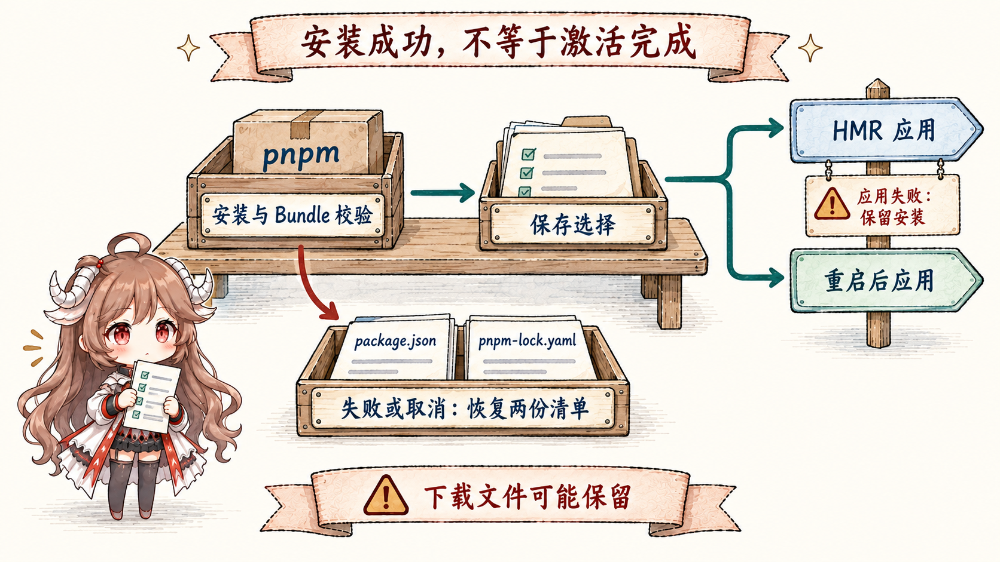
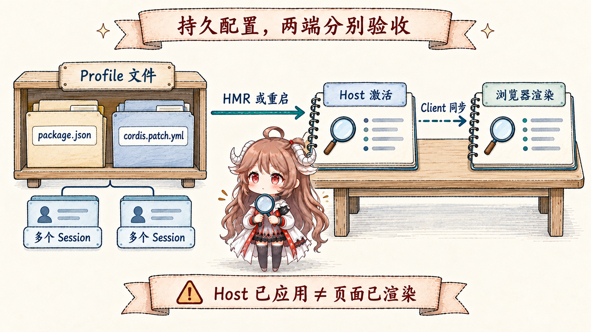

设想你要给 DSH 页面加一个团队状态面板。Agent 必须先知道哪里可以放 UI、哪些 Service 能读取状态，再把代码包装成可安装的插件。真正困难的部分是安装后的责任：它影响哪几个会话，重启是否还在，配置保存后什么时候算可用，失败又保留了哪些文件。
阅读契约。本文跟随这一个面板从接口检查走到安装、启用和移除。读完后，你应能区分两个只读 Inspect 工具与 plugin_manager 的六种 action，说明 Bundle、profile 配置和运行中 Fiber 的关系，并根据 changed 与 application 判断结果，而不是把“已安装”报告成“页面已可用”。
证据边界。本文固定于 ddefc45。当前 工具注册源码只提供 cordis_inspect_list 和 cordis_inspect_query；Creator 的持久变更经过 Plugin Manager。动态 Host/Client runner 仍有程序化调用者与浏览器控制，但不能再把其中的 define/run/stop/undefine 当成当前模型工具。
一、先把真实接口读清楚，再写插件
1.1 Inspect 返回契约，不调用业务能力
cordis_inspect_list 返回 Provider manifest，而不是扫描一个随意可调用的对象。Host 目录包含 Service、Event、Builtin 和 Tool；Client 同步 Service、Event、Builtin、Slots 和 Theme 等目录。每个 Provider 声明只读 method 及输入输出 JSON Schema。面板作者应先选出目录中的真实名字，再请求精确签名。
cordis_inspect_query 的 platform、provider、method 必须来自目录。Host 查询在本地执行；Client 查询等待第一个有效页面回答，没有页面时继续等待，直到回答或工具取消。返回 Service 签名不等于调用那个 Service；返回 Slot 的 props 和注册要求，也不等于已经创建 UI。
仍以状态面板为例：先无参数浏览 Slots 的紧凑树，再给出精确 root 读取该 Slot 的完整要求。若 root 是 Factory，回答的是其身份、scope 与注册者，不能把它误当普通 Slot 的完整 props。然后查询面板依赖的 Service 和 Theme，才能确定数据读取与视觉容器。这保留了旧设计中最有价值的一点：反射目录只提供事实，不悄悄变成万能写接口。
1.2 当前入口是普通 Bundle
Bundle 是带 dsh.bundle.patch 的包；该字段指向一份插入或覆盖 Loader 条目的 YAML。它与进程内动态 Package 是两种对象。前者用普通文件和包依赖保存，后者由 runner 的内存 Registry 保存。当前 Creator 把 Inspect 与 Plugin Manager 放进同一个 Agent preset，因此可以检查运行接口、编写包，再安装到当前 profile。
下面是 Bundle 声明的最小示意，省略面板的 Host/Client 实现与 Client 打包元数据；它说明配置怎样连到包，不代表仅写 manifest 就会出现面板。
{
"name": "@example/status-panel",
"version": "1.0.0",
"type": "module",
"exports": { ".": "./index.js" },
"dsh": { "bundle": { "patch": "./cordis.patch.yml" } }
}- insert:
- id: status-panel
name: '@example/status-panel'安装器会校验包确实声明 Bundle 并解析 patch，再将包加入当前 profile 的依赖与选择列表。纯配置 Bundle 也可以只插入已有插件，例如 MCP 客户端；不必为每一次配置都生成新的 Host 执行代码。
二、管理操作跨会话保存，权限也随之扩大
2.1 六种 action 写入不同对象
plugin_manager把 Web 管理页使用的服务开放给 Agent。先通过列表取得精确标识，再进行四类持久动作：
| action | 对象与效果 | 保留的内容 |
|---|---|---|
list_plugins / list_bundles | 分页读取当前 profile 的插件或 Bundle，返回精确标识。 | 不改变配置；仍受同一工具权限检查。 |
set_plugin | 在 profile patch 的最后一个匹配 override 中修改 disabled，或新增 override。 | 保留该 override 的其他配置字段与已安装包。 |
set_bundle | 改写有序的 dsh.profile.bundles；重新启用会追加到末尾。 | 禁用保留依赖；层次优先级可能变化。 |
install_bundle | 安装并验证 Bundle，默认随后启用。 | 安装成功而启用失败时保留依赖。 |
remove_bundle | 先取消选择、卸载运行贡献，再运行 pnpm remove。 | 失败时保留已完成步骤和剩余状态，不自动重新启用。 |
例如临时关闭状态面板，应选择 set_bundle 并传 enabled: false，而不是删除包。若只关闭其中一个可寻址插件，则使用 set_plugin。管理器拒绝关闭自己的关键组件，也不会编辑 Agent preset 内部的组合；profile 修改影响使用该 profile 的所有会话，不能套用旧动态对象“由当前 Session 独占”的假设。
2.2 单次调用授权和依赖脚本授权分开
工具在分派任何 action 前都要求 danger-full-access，或为这一次调用请求批准，连列表操作也不例外。较低权限下，ask 可以请求批准；never、拒绝、取消或没有审批通道都会阻止执行。单次批准不会改写整个 Session 的权限模式。
原因很具体：新 Host 插件在进程内运行，超出工作区沙箱；包安装还可能运行依赖脚本。若 pnpm 阻止脚本，失败结果中的 pendingBuilds 列出当前 profile 中仍待决定的包名，包括较早尝试留下的项。用户明确批准后，重试才能传 approvedBuilds。服务检查这些包名是否仍待决定，却不能替调用者验证对话是否真的获得批准；保存的许可按 profile 中的包名生效，并可跨后续安装失败保留。
三、安装完成、配置已保存、激活成功是三份事实

3.1 包操作与 HMR 使用不同的协调方式
CLI 和服务共享 profile 的 manifest 写锁，避免两次包或配置写入互相覆盖。pnpm 执行在 HMR 队列外；成功安装并通过 Bundle 验证后，配置应用才进入 runExclusive()。HMR 本身不拿包写锁。这样耗时下载不会堵住所有源码刷新，配置应用仍与自动 reload 串行。
安装失败、取消或装到非 Bundle 时，管理器恢复开始前的 package.json 与 pnpm-lock.yaml，但不声称整个文件系统回滚：下载到 node_modules 或 pnpm store 的文件可以留下，记录脚本决定的 pnpm-workspace.yaml 也不被恢复。安装已成功、后续启用失败，则保留依赖与已保存选择，返回失败供修复。
可取消的服务调用使用 requestId 跟踪一次安装。installing、cancelling 和 applying 是进度；cancelInstall()只有等 pnpm 退出并恢复文件后才回答 cancelled，进入 applying 后回答 too-late。当前 Agent 工具没有 cancel action；这里是服务/Web 调用面的能力，不能凭类型存在就假定模型也能调用。
3.2 结果必须同时读取 changed 和 application
ChangeResult把磁盘状态和运行结果分开。changed 比较 profile 文件是否变化；application 可以是 applied、restart-required、overridden、failed 或 cancelled。重复启用可能 changed 为 false 却已有效；配置保存成功也可能 changed 为 true 而应用失败。
{
"stage": "enable",
"target": "@example/status-panel",
"changed": true,
"application": "restart-required",
"enabled": true
}这个简化结果只能报告“配置已保存，需要重启”。没有 HMR 时 profile 不会立即应用变更；替换已安装包版本也需要重启来加载新的 JavaScript 模块代。若更高优先级的 home 或启动覆盖抵消了插件开关，可返回 overridden。HMR 应用还会等待移除插件的清理和 Loader 结算；新出现或改变的 inactive 状态会失败，未改变的既有问题以 warning 返回。
四、Host 可用仍不等于浏览器面板可用

4.1 验收跟随读者能看见的结果
管理返回值描述 Host 激活；浏览器同步失败另见 Settings 的插件列表。对状态面板，应再确认 Client 已同步、正确 Slot 中确有面板、所需 Service 可用，以及禁用后事件监听和 UI 注册会消失。只看到 installed 或 Host applied，不能宣称页面已经渲染成功。
这也解释了持久化带来的成本。重启会重新按 profile 文件装配，多个 Session 可以同时受到新插件影响。需要回退时，禁用 Bundle、修复配置、移除依赖分别处理不同对象；移除必须先卸掉运行贡献才可删包，失败时不会倒走所有步骤。这比临时 eval 多了文件、依赖和发布责任，但留下了可重现的装配来源。
4.2 动态 runner 仍在，但不是当前模型写入入口
Host runner与 Client runner 仍保留 define、run、stop、undefine 的程序化生命周期。它们保存 Session 所有的不可变 Package、current/next 版本指针与 Run 身份；Host-only 直接启动，带 Client 的定义仍经过浏览器批准并按 Host → Client 加载。stop 保留定义，undefine 删除定义，进程重启清空这些内存对象。
这部分源码仍适合研究 Cordis effect 回收、异步激活与 JSON RPC，但必须守住入口事实：当前 tool-cordis 没有创建或更新动态定义的工具。node:vm 也仍只是 API 约束，不是敌对代码安全边界；同步超时不能约束任意 async body。保留 runner 不代表 Creator 仍沿用旧的七工具路线。
五、把“扩展了自身”变成可验收的结论
- 接口事实先于代码：从只读目录取精确契约，别把查询当业务调用。
- 文件状态与运行状态分开：Bundle 安装、profile 选择、Host 激活与浏览器渲染各有检查点。
- 跨会话变更按 profile 管理：权限检查和脚本授权必须覆盖实际的进程内执行与持久文件。
- 失败后依据剩余事实修复：安装可恢复两份清单，启用失败保留安装，移除失败保留已完成步骤；不存在一条通用“全部回滚”。
- 保留代码不等于保留入口：动态 runner 的能力只能按其现有调用者解释，不能代替模型实际可见的工具清单。
七篇路线最终回到相同问题：谁拥有状态，何时可以执行，失败后留下什么。当前 DSH 用只读 Inspect 让 Agent 理解运行接口，再用持久 Bundle 和 Plugin Manager 改变后续装配。是否真正完成扩展，要由保存结果、激活诊断与用户可见行为共同回答。